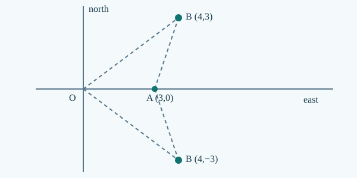

This is original candidate teaching, not an independently reviewed textbook or an authenticated exam question. The three worked-example tiers are not approved QRT demand bands.
1. Observe and establish a reference
Imagine two students measuring the same corridor from different doors. One writes +4 m, the other −4 m for the same flag. Before deciding who is wrong, ask where each student placed zero, which way counts as positive, and what each division measures.
You need signed numbers, a number line and length conversion (100 cm = 1 m). A position is a coordinate in a specified reference frame, not a distance already travelled. Use a stationary ground frame here.
2. Build and justify the model
A coordinate is a label for position relative to a chosen origin and direction. To compare readings from different rulers, first identify shared physical markers. A uniform ruler has a constant signed scale: subtract two paired readings to cancel the offset and determine the scale. One anchor then determines the offset. This explains why a shift of origin does not change displacement and why reversing an axis reverses its signed component. The physical separation remains the absolute difference in calibrated metre coordinates. Calibration is a model: two marks alone do not establish that every intermediate mark on a damaged ruler is equally spaced. A third independent check can invalidate the assumption. This is distinct from measuring the length of the travelled path.
To turn a scale reading r into a ground coordinate x, let b be the ground position at r=0 and k the signed length per division. Then x=b+kr. The metre unit and signed orientation are independent: a negative scale means increasing readings move west on our east-positive axis, not a negative length. For two markers, subtract x₂−x₁=k(r₂−r₁), giving k=(x₂−x₁)/(r₂−r₁). Substitute either anchor to recover b.
Enrichment: two-anchor affine calibration extends basic coordinates and is not asserted to be mandatory official syllabus content.
Derivation in three steps
- Choose one fixed physical metre axis and identify two distinct common markers. Comparisons require a shared physical reference.
- Find k=(x₂−x₁)/(r₂−r₁), then b=x₁−kr₁. Subtracting eliminates the unknown offset; the nonzero denominator is required.
- Check a third reading and distinguish signed change from absolute separation. An inconsistent point rejects the proposed uniform calibration.
3. Worked examples
Problem: A gate is x=0; a flag 4 m west is marked with a west-positive ruler of unit spacing. Compare readings.
Reasoning: Ground east-positive x=−4 m; west-positive r=+4 m.
Independent check: Both give a 4 m separation from the gate.
Problem: A metre ruler has zero at x=7 m and increases eastward. Convert readings −2 and +3.
Reasoning: x=7+r; positions 5 m and 10 m, displacement +5 m.
Independent check: Subtracting cancels the offset.
Problem: A uniform scale reads 1 at x=3 m and 5 at x=15 m. Find x at reading 4 and check a third marker reading 7 at x=21 m.
Reasoning: k=3 m/division, b=0; reading 4 gives 12 m; reading 7 gives 21 m.
Independent check: The third marker is consistent but does not prove uniformity everywhere.
4. When the model works — and when it does not
- Two distinct calibrated markers determine b and k only under the uniform-scale assumption.
- A moving origin requires a time-dependent transformation; nonuniform scales require more information.
Diagnostic: Compare east-positive and west-positive readings of one fixed marker.
Repair: Translate both into one physical axis before comparing; distinguish sign from length.
5. Test your understanding
A uniform scale reads 0 at x=9 m and 3 at x=3 m. Find x at reading 5.
Reveal textbook explanation
x=−1 m. k=−2 m/division and b=9 m; x=9−2(5).
You can now locate the same object in different coordinate systems and explain why coordinates change while physical separation does not. Continue to M02 to distinguish actual travel from net displacement.
Existing Core2 question preparation
Coherent units for examination reasoning
Convert a speed in km/h to m/s by multiplying by 5/18. When a graph uses km/h vertically and minutes horizontally, convert the minutes to hours before finding an area in km or slope in km/h². Convert diameter to radius and centimetres to metres before applying a circle formula. Example: 54 km/h is 15 m/s; a velocity change of 15 m/s over 3 s is 5 m/s². A constant velocity of 12 km/h for 15 min gives 3 km; a velocity change of 12 km/h over 15 min gives 48 km/h², not 0.8 km/h².
These are links to existing question identities, not reproduced original questions or approved demand classifications.
- NSEJS 2021 Q17 — Rotated coordinate systems and inverse endpoint geometry (PH01 preparation)
- NSEJS 2022 Q37 — Reflected signal and moving receiver (cross-topic prerequisite)
- NSEJS 2024 Q33 — Compare acceleration from disparate givens (PH01 preparation)
- NSEJS 2024 Q37 — Angular fraction, period and frequency (PH01 preparation)
- NSEJS 2024 Q59 — Reflected pulse and moving observer (cross-topic prerequisite)
- NSEJS 2024 Q60 — Compare multiple velocity graphs (PH01 preparation)
Complete PH01 question-to-construction map · source and academic HOLD.
R4.2 · Source-led advanced construction
A rotated frame can be reconstructed with two distance equations. For endpoints on two circles, subtract equations to find the common x-coordinate, then keep both signs of y. A separate bearing or signed coordinate can remove the reflection ambiguity. Example: ranges 5 from origin and √10 from (3,0) give x=4, y=±3. Both satisfy the ranges; only a northing observation chooses y=+3.

R4.3 · APPLY construction · D3.3
Apply a stated rate after normalizing units. Map v_i and v_f with signs; convert km/h by 5/18, m/min by 1/60, ms by 1/1000, and minutes by 60. Subtract velocities only in the same unit. Example: −36 km/h to +180 m/min in 4000 ms becomes −10 to +3 m/s in 4 s, so a_avg=+13/4 m/s². Multiply by 4 s to recover +13 m/s. This rate does not prove acceleration was constant.
Independent practice: Open the protected APPLY instance before comparing your reasoning.
6. Apply your reasoning in M01 Core1B
Three fresh, separate protected practice tasks cover MODEL, REPRESENT and SYNTHESIZE (proposed D3.4, D3.5 and D3.6). They are not the worked examples above.
Latest candidate: 5 protected INSTANCE tasks; R4.6 and earlier saved attempts remain separate.
Open M01 R4.6 · D3/D4 practiceHistorical R4.6: 5 tasks; previous attempts stay accessible.
Open M01 R4.5 · D3/D4 practiceHistorical R4.5: 5 tasks; previous attempts stay accessible.
Open M01 R4.4 · D3/D4 practiceHistorical R4.4: 5 tasks; saved attempts remain accessible.
Open M01 R4.3 · D3/D4 practiceHistorical R4.3: 5 tasks; earlier saved attempts remain accessible.
Open M01 R4.2 · D3/D4 practiceHistorical R4.2: four protected tasks; earlier saved attempts remain accessible here.
Open M01 Core1B →PH01 chapter overviewNext Core1A · M02Science and source custody
Original instructional examples and original figure. Source-scope candidate; NO_QUALIFIED_SOURCE_YET. Independent scientific/QRT/B1–B7 and release reviews HOLD.